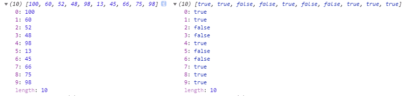

大家都知道，JavaScript由DOM、BOM、ECMAScript组成，ECMAScript是标准。
ES6的全称其实是ES2015（6.0）每年更新，依次类推
ES2016(7)
...
ES2019(10)
两个字：方便。不用ES6也能写，使用ES6就是为了方便，能用更少的代码去做更多的事情，为了提高工程性。
let用于声明变量
const用于声明常量，且不可修改
相比var，ES6的变量有啥好处
1.禁止重复声明
ES5
var a = 12;
var a = 5;
console.log(a)输出为5，一点问题没有
ES6
let a = 12;
let a = 5;
console.log(5)
它会告诉你a已经被定义过了，不能重复定义
2.控制修改
const a = 5;
a = 12;
console.log(a);
它告诉你你给常量赋值，这是不行的
3.支持块级作用域
ES5只有函数级作用域
function sum(a, b) {
return a+b;
}
console.log(a)这时候它在外面是访问不到a的
ES6有块级作用域
{
var a = 12;
}
console.log(a);输出12
{
let a = 12;
}
console.log(a);不用解构赋值
//后台读取的数据
var json = {age: 12,height: 168}
console.log(json.age,json.height);用完解构赋值
let {age,height} = {age: 12,height: 168};
console.log(age,height)你就不需要去点了
注意事项
1.左右两边一样
let {a,b,c}={a: 12, b: 55, c: 99};//同是对象
let [a,b,c]=[12,5,8];//同是数组2.右边得是个东西
let {a,b,c} = {12,5,13};//右边是啥，对象？数组？都不是使用箭头函数不仅写起来简单而且能修复this的问题
1.简单
ES5
let show=()=>({a: 12, b: 5});//用()包一下2.修复this
ES5
在ES5，谁调用this，this就是谁
在ES6,this绑定在当前的环境
(1)剩余参数
function show(a, b, ...arr){
console.log(a, b, arr);
}
show(12,5,44,7,85,34,33);12,5,44,7,85,34,33
注意：必须是最后一个
function show(a, b, ...arr, c){
console.log(a, b, arr, c);
}
show(12,5,44,7,85,34,33);
剩余参数必须得是最后一个形参
(2)数组展开
...arr等价于1,5,12,3
let arr = [1,5,12,3];
var sum=(a, b, c, d)=>a+b+c+d;
console.log(sum(...arr))21
let arr = [1, 2, 3];
let arr2 = [4, 5, 6];
let arr3 = [...arr1, ...arr2];
console.log(arr3);1,2,3,4,5,6
4个API，由对象来调用
map 映射
forEach 循环
filter 过滤（删除）
reduce 减少
(1)map
映射：1对1，进去100个，出来100个
var scores = [100,60,52,48,98,13,45,66,75,98];
//两个参数item，index
var res = scores.map((item)=>item>=60);
console.log(scores,res);
(2)forEach
把true筛出来
let arr = [1,5,12];
arr.forEach((item,index)=>{
console.log(`第${index}个：${item}`);
});第0个：1
第1个：5
第2个：12
(3)filter
let scores = [1,2,3,5,6,95,63,45,68,60];
let pass = scores.filter((item)=>item>=60);
console.log(pass)(4) [95, 63, 68, 60]
(4)reduce
求和
let arr = [1,5,3,16];
let res = arr.reduce((temp,item,index)=>{
console.log(`temp:${temp}`);
return temp+item;
});
console.log(`res:${res}`);temp:1//第一次是第一个数
temp:6//后面都是和
temp:9
res:25
求平均数
let arr = [1,5,3,16];
let res = arr.reduce((temp,item,index)=>{
if(index<arr.length - 1)
return temp+item;
else
return (temp+item)/2;
});
console.log(`res:${res}`);(1)字符串模板
let name = '小明';
console.log(`name : ${name}`);name : 小明
好处：能折行，对于大段的东西很适用
let str = `<div>
<p>第一行${item1}</p>
<span>第二行${item2}</span>
</div>`;(2)startsWith
let url = 'http://www.baidu.com';
if(url.startsWith('http')||url.startsWith('https')) console.log('是网址');
else console.log('不是网址')(3)endsWith
标准写法：
let json = {"name":"zhangsan","age":12};let xiaoming = {
name: 'xiaoming',
age: 25
};
console.log(JSON.stringify(xiaoming));{"name":"xiaoming","age":25}
let json = '{"name":"xiaoming","age":25}';
console.log(JSON.parse(json));{name: "xiaoming", age: 25}
问题：按顺序拉取数据
环境：服务器
我用的是WampServer
data/1.json
{a: 1}./data/2.json
{b: 12}./data/3.json
{c: 16}./html
$.ajax({
url: 'data/1.json',
dataType: 'json',
success(data1) {
$.ajax({
url: 'data/2.json',
dataType: 'json',
success(data2) {
$.ajax({
url: 'data/3.json',
dataType: 'json',
success(data3) {
console.log(data1,data2,data3)
}
});
}
});
}
});{a: 1} {b: 12} {c: 16}
因为这种写法恶心，所以Promise出现了
了解一下Promise，其实jQuery的ajax也是Promise
let p=new Promise(function (resolve, reject){//resolve成功，reject失败
$.ajax({
url: 'data/1.json',
dataType: 'json',
success(data){
resolve(data);
},
error(res){
reject(res);
}
});
});
p.then(function (data){
alert('成功');
console.log(data);
}, function (res){
alert('失败');
console.log(res);
});怎么用
Promise.all([
$.ajax({url:'data/1.json', dataType: 'json'}),
$.ajax({url:'data/2.json', dataType: 'json'}),
$.ajax({url:'data/3.json', dataType: 'json'})
]).then(([data1,data2,data3])=>{
console.log(data1,data2,data3);
},(res)=>{
alert('错了')//一个接口出错就不渲染
}){a: 1}a: 1__proto__: Object
{b: 12}b: 12__proto__: Object
{c: 16}c: 16__proto__: Object
但是Promise有个致命的缺点，处理不了逻辑（第一个数据可能决定后面读什么）
因此async/await登场了，专门配合Promise，用同步的方法来写异步。
但是其实编译完还是恶心的嵌套，只不过不需要我们程序员来写，编译就完了
let show = async ()=> {
let data1 = await $.ajax({url: 'data/1.json', dataType: 'json'});//await后面跟的是Promise
let data2 = await $.ajax({url: 'data/2.json', dataType: 'json'});
let data3 = await $.ajax({url: 'data/3.json', dataType: 'json'});
console.log(data1,data2,data3)
}
show();{a: 1} {b: 12} {c: 16}
处理逻辑
let show = async ()=> {
let data1 = await $.ajax({url: 'data/1.json', dataType: 'json'});
if(data1<10) {
let data2 = await $.ajax({url: 'data/2.json', dataType: 'json'});
console.log(data1,data2)
}else {
let data3 = await $.ajax({url: 'data/3.json', dataType: 'json'});
console.log(data1,data3)
}
}
show();{a: 1} {c: 16}